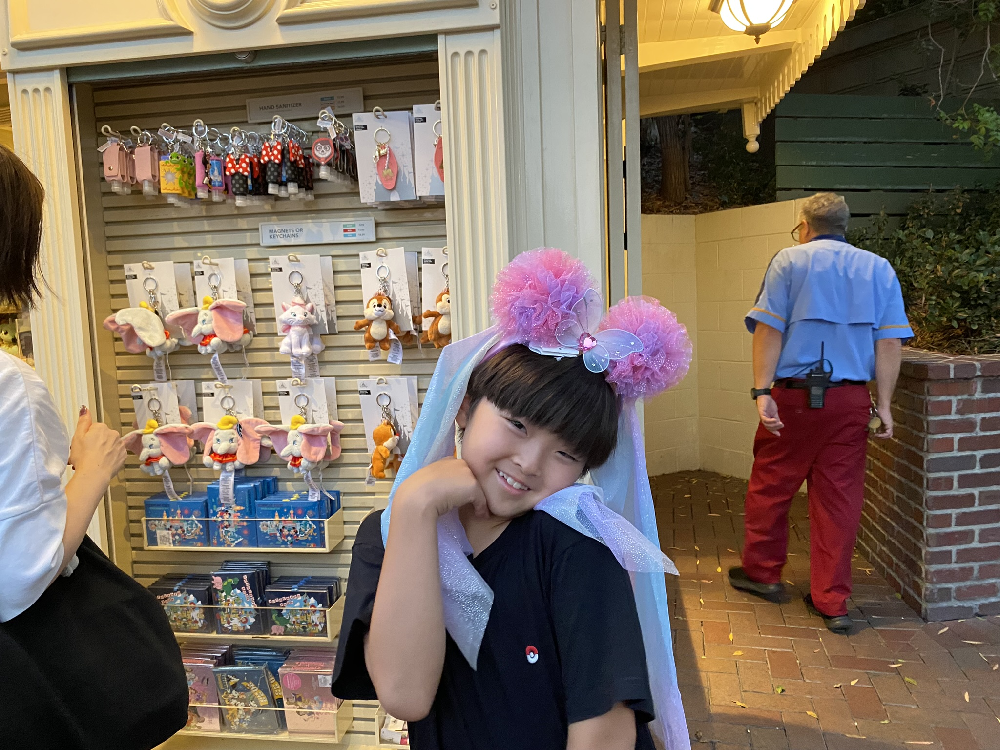

2023 Trip
with my cousin and aunt
People
Lily Yagi

That is me. I am 13 years old.
Kai Yagi
My immature 10 years old little brother.
Toshi Yagi

My hardworking dad, who everyone called, "Hardworker" of the group.
Tasuki Akahori
He is my cousin that my brother admired, from Japan.
Yuri Akahori
She is my mom's sister and my aunt from Japan.
Day 1
Our visitors hopped off the plane from Japan on July 20th. It was the day we have all been waiting for. My brother had been really excited because they had bought a Nintendo Swtich from Japan for him. My brother and my mom drive all the way to LAX to pick them up at the airport. I, on the other hand, had to go practice golf with my dad because I had a golf tournament a few days later.
We all met up at In-N-Out for some burgers after the visitors got picked up and my dad and I finished golf practice. That was the start of the wonderful adventure awaiting us.
Day 2
Because both my cousin and aunt were both pretty tired from the plane flight, we didn't really do anything. Although my dad and I were planning to go practice golf for my golf tournament, we didn't go.
We did go to an Angels game where we got a angels pouch and we got to see Shohei Ohtani. The Angels magically won after hitting many homeruns which made the game more interesting then all the other Angels games where the Angels lost.
My cousin and aunt sat in one of the seats in the front, while my family and I sat in the cheap, $30 dollar seat. At least I was also able to get a nice shot of the bald head of a person who played some gambling game all throughout the Angels game, in front of me.
Day 3
Next, we were planning to go to the San Diego Zoo or something, I had a golf tournament the next day so we went on the tour around Hollywood so I wouldn't be too tired. We saw the Hollywood sign, saw the handprints of famous celebrities, and plenty of homeless people.
After looking at the handprints and the stars with people's names on it, my dad went back to get the car for us while the rest of us went to a nearby mall where we could see the Hollywood sign. We got Coldstone ice cream there but we forgot to order my brother's so he ate half of mine. I ate the other half and a bit of coffee ice cream from my mom.
Day 4
I had a golf tournament this day at David L. Baker. My dad came with me to spectate while the others went to a bakery called Cream Pan. After, they went to the park and then to the pool.
Day 5
It was the 24th and it was arguably one of the most exciting days for the whole trip. We went to Las Vegas! The day before, we had dropped off our dog at my parent's friend's house. It was a long 4 hour trip. We had lunch at McDonalds.
When we were finaly there we went to M&M, Hershey's, and Coca Cola. Then, we had dinner at Eataly, an Italian restaurant. We stayed at Vdara.
Day 6
When we checked on our dog, Cocoa, in the camera, she seemed like she was having a decent time. We went to the pool that day while my mom and my aunt went to an outlet. I got sunburned, but I still had a good time.
I also got a lot of good photographs from my hotel window.
Day 7
Our three day trip was now coming to an end. We packed up our belongings and hopped on the car for another 4 hour ride back home. We stopped by McDonalds again for lunch. Because my brother and I sat in the back row, so we barely got an air conditioned air so it was a hot, stuffy, and torturous car ride.
When we were back home, we went to pick up our dog, Cocoa as soon as we could.
Day 8
We didn't get a day to rest before we to Disneyland the next day. We went on rides like Space Mountain, Manhatton Bobsleds, "it's a small world," and Big Thunder Mountain. My brother was also very traumatized when he went on your first ride, Space Mountain. In the picture, you can see how he is close to crying.
My dad didn't come with us. It was pretty hot that day so we ordered ice cream, but my mom accidentally ordered double the amount we wanted so we had to stuff ourselves with ice cream as we marched the parade.

I made Kai pose with a headband with Mickey Ears at the end of the day. When we were leaving I slammed into a person wearing a pink shirt, knocking her down like a superhero tackling a villain. My mom got mad.
Day 9
The ninth day was the most useless day or the WHOLE trip. All we did was go to Costco, a Japanese store, and a store with games for our new Nintendo Switch. The store was called, Hidden Game Games and the store sign was literally hidden.
Day 10

We went to the San Diego Zoo. Although the day before this one had been pretty boring, we had a pretty fun day, even before we entered the gates to the San Diego Zoo. We went to California Pizza Kitchen for lunch, where my dad forgot his credit card. Luckily he was able to get it on the ride home from the zoo.
The zoo had a baby red panda, but we weren't able to see it, but at least we were able to see the adult red pandas. Other than red pandas, we were able to see a variety of animals, including a bear taking a bath.
Day 11
We went to Wild Rivers the next day. Wild Rivers is a huge waterpark at the Great Park in Irvine California. We had a lot of fun there. We went on Tom Cat Racers and many more fun waterslides. Only the kids went on waterslides. We also went under a huge bucket with a lot of water in it. It soaked us, including my dad.
Day 12
It was a Monday and from this Monday to Thursday, my brother and my cousin had Futsal. While they had Futsal, my mom, my aunt, and I went to an Outlet.
Day 13
I didn't go to an outlet like my mom and aunt did because my dad had gotten tickets to see the Rams, a local Football team, practice at UC Irvine, which is a college close to where we live.
Although my dad bought two official sized footballs, we could get a autograph from a single football player, even the last player didn't turn our way even when we called out his number and even his name.
The website is not finished yet
Happy Birthday Mari!
Dear Mari,
I'm sorry that this website isn't finished yet. I didn't have enough time, but I will make sure to finish it was soon as I can. Once it's finsihed, I'm sure it will be worth the wait. I hope you had a good birthday and that you continue to be a great mom.
Love Lily,